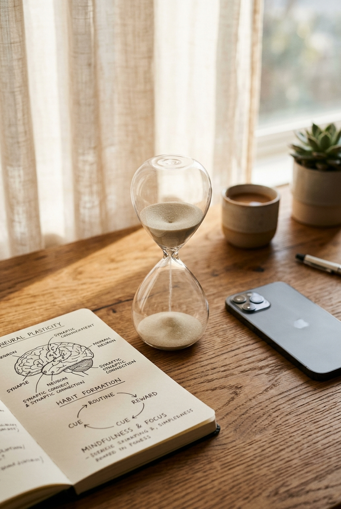

చెడు అలవాట్లను బలవంతంగా ఆపడానికి ప్రయత్నించినప్పుడు మెదడు తిరుగుబాటు చేస్తుంది. ఎందుకంటే ఆ అలవాటు ఒత్తిడి లేదా విసుగు నుండి తప్పించుకోవడానికి మెదడు నిర్మించుకున్న ఆటోమేటిక్ సేఫ్టీ వాల్వ్. ఒక అలవాటును అకస్మాత్తుగా ఆపే బదులు, ప్రేరణ (Trigger) మరియు ప్రతిస్పందన (Action) మధ్య కేవలం 60 సెకన్ల మైండ్ఫుల్ పాజ్ ఇవ్వడం ద్వారా మెదడును సులభంగా రీవైర్ చేయవచ్చు.
- పని మధ్యలో తెలియకుండానే ఫోన్ పట్టుకుని రీల్స్ స్క్రోల్ చేసేవారికి
- ఒత్తిడి, బోర్ కొట్టినప్పుడు జంక్ ఫుడ్ లేదా స్వీట్లు తినేవారికి
- ముఖ్యమైన పనులను చివరి నిమిషం వరకు వాయిదా వేసేవారికి (Procrastination)
- చిన్న విషయాలకే విపరీతమైన ఆందోళన లేదా కోపానికి లోనయ్యేవారికి
- "రేపటి నుండి నేను అసలు ఫోన్ ముట్టుకోను" అని విపరీత శపథాలు చేయడం
- అలవాటు తప్పిన ప్రతిసారీ తీవ్రమైన ఆత్మనింద లేదా అపరాధ భావనలో మునిగిపోవడం
- ఒత్తిడికి అసలు కారణాన్ని గుర్తించకుండా అలవాటును మాత్రమే ద్వేషించడం
🧠 అసలు 60 సెకన్లలో చెడు అలవాటును ఎలా బ్రేక్ చేయవచ్చు?
డైరెక్ట్ సమాధానం (Bottom Line Up Front): చెడు అలవాటును వదులుకోవడానికి దాన్ని బలవంతంగా అణచివేయకూడదు. మీరు ఫోన్ తీయబోతున్నప్పుడు లేదా స్వీట్ తినబోతున్నప్పుడు, దానికి బదులుగా కేవలం 60 సెకన్ల పాటు కళ్ళు మూసుకుని దీర్ఘ శ్వాస తీసుకోండి. ఆ 60 సెకన్ల తర్వాత కూడా మీకు ఫోన్ చూడాలనిపిస్తే నిరభ్యంతరంగా చూడండి. ప్రతిసారీ ఆటోమేటిక్ రియాక్షన్కు ముందు ఈ 60 సెకన్ల విరామం ఇవ్వడం వల్ల, మెదడులోని పాత ఎలక్ట్రికల్ కనెక్షన్లు (Neural Pathways) బలహీనపడతాయి. క్రమంగా కేవలం 2 నుండి 3 వారాల్లో ఆ చెడు అలవాటు శాశ్వతంగా రద్దవుతుంది.

📌 లుక్ సేవ్ చేయండి📑 ఈ గైడ్లో ముఖ్యాంశాలు • త్వరిత లింకులు
🔬 శాస్త్రీయ ఆధారాలు & న్యూరోబయోలాజికల్ ఫ్యాక్ట్స్
ఈ న్యూరల్ ట్రిక్ వెనుక ఉన్న తాజా మెడికల్ & న్యూరోలాజికల్ పరిశోధనలు:
- నేచర్ (Nature 2024) పరిశోధన: విశ్రాంతి కోసం లేదా పని మధ్యలో ఫోన్ స్క్రోలింగ్ చేయడం వల్ల మెదడు ప్రీఫ్రంటల్ కార్టెక్స్ విశ్రాంతి పొందదు; ఇది డోపమైన్ రిసెప్టార్లను ఓవర్లోడ్ చేసి అలసటను మరింత పెంచుతుంది.
- హెబ్స్ లా (Hebb's Law of Neuroplasticity): ఒకేసారి ఉత్తేజితమయ్యే న్యూరాన్లు బలంగా కలిసిపోతాయి (Neurons that fire together, wire together). చర్యకు ముందు విరామం ఇస్తే అవి వేరవుతాయి.
- బేసల్ గాంగ్లియా vs ప్రీఫ్రంటల్ కార్టెక్స్: అలవాట్లు బేసల్ గాంగ్లియాలో అచేతనంగా దాగి ఉంటాయి; 60 సెకన్ల కాన్షియస్ పాజ్ వల్ల నిర్ణయాధికార ప్రాంతమైన ప్రీఫ్రంటల్ కార్టెక్స్ మళ్లీ నియంత్రణలోకి వస్తుంది.
🌳 అలవాట్లు మెదడులో ఎలా ఏర్పడతాయి? 'చెట్టు మొద్దు' లాంటి న్యూరల్ పాత్వేస్
మనం ఒక పనిని పదే పదే చేసినప్పుడు, మన మెదడులోని నరాల మధ్య విద్యుత్ తరంగాల దారి (Electrical Activation Pathway) మొదట ఒక చిన్న కాలిబాటలా ఏర్పడుతుంది. కానీ నెలలు, సంవత్సరాల తరబడి అదే పనిని పునరావృతం చేస్తూ ఉంటే, ఆ దారి ఒక పెద్ద చెట్టు మొద్దులా (Tree Trunk) అత్యంత బలంగా, శాశ్వతంగా మారిపోతుంది.
ఉదాహరణకు, మీరు అర్థరాత్రి స్వీట్స్ తినడం, లేదా సోఫాలో వాలిపోయి ఫోన్లో బింజ్ వాచింగ్ (Binge-watching) చేయడం లాంటివి చేస్తున్నారంటే—మీరు నిజంగా ఆ పనులను మనస్ఫూర్తిగా ఇష్టపడి చేస్తున్నట్లు కాదు! రోజువారీ అలసట, మానసిక ఒత్తిడి, లేదా ఏదైనా బాధాకరమైన భావన నుండి తప్పించుకోవడానికి మీ మెదడు నేర్చుకున్న ఆటోమేటిక్ షార్ట్కట్ (Automatic Shortcut) అది.
మెదడు నిరంతరం శక్తిని ఆదా చేయడానికి ప్రయత్నిస్తుంది. అందుకే ఒకసారి ఒక పని అలవాటుగా మారిన తర్వాత, అది మన ఆలోచనతో సంబంధం లేకుండా 'ఆటో-పైలట్' మోడ్లోకి వెళ్లిపోతుంది. అందుకే మీరు ఫోన్ ముట్టుకోకూడదు అనుకున్నప్పటికీ, మీ చేతులు తెలియకుండానే పాకెట్ నుండి ఫోన్ తీసి ఇన్స్టాగ్రామ్ను తెరుస్తాయి!
"చెడు అలవాటు అనేది మీ నైతిక వైఫల్యం కాదు; అది మెదడులో దశాబ్దాలుగా పేరుకుపోయిన అత్యంత బలమైన ఎలక్ట్రికల్ హైవే. దాన్ని ద్వేషించడం వల్ల ఫలితం ఉండదు, ప్రక్కనే కొత్త బైపాస్ రోడ్డు వేయడమే ఏకైక మార్గం."
🔄 ప్రమాదకరమైన 'గిల్ట్ లూప్' (The Toxic Guilt Loop)
చాలామంది చెడు అలవాటుకు బానిస కావడానికి ప్రధాన కారణం: గిల్ట్ లూప్ (అపరాధ వలయం). ఇది ఎలా పనిచేస్తుందో ఒక చిన్న ఉదాహరణ ద్వారా అర్థం చేసుకుందాం:
మీరు ఆఫీసులో లేదా చదువులో ఒక ముఖ్యమైన ప్రాజెక్ట్ పూర్తి చేయాల్సి ఉంది. ఆ పని కష్టంగా అనిపించి ఒత్తిడి పెరగగానే, మీ మెదడు ఆ టెన్షన్ తట్టుకోలేక సులభమైన ఉపశమనం కోసం ఫోన్ వైపు లేదా సిగరెట్/స్వీట్ వైపు నడిపిస్తుంది. కాసేపు రీల్స్ చూసిన తర్వాత, "అయ్యో.. సమయం వృధా చేసేశానే, పని ఇంకా అలాగే ఉంది!" అన్న తీవ్రమైన ఆందోళన మరియు అపరాధ భావన (Shame & Guilt) చుట్టుముడతాయి.
ఇప్పుడు మీ మెదడుపై డబుల్ టెన్షన్ పడుతుంది—ఒకటి పెండింగ్ వర్క్ ఒత్తిడి, రెండవది సమయం వృధా చేశామన్న ఆత్మన్యూనత. విచిత్రం ఏమిటంటే, ఈ డబుల్ టెన్షన్ నుండి పారిపోవడానికి మీ మెదడు మళ్లీ అదే ఫోన్ వైపుకే పరుగెడుతుంది! ఇది ఒక విషవలయంలా నిరంతరం తిరుగుతూనే ఉంటుంది.
2024లో ప్రఖ్యాత అంతర్జాతీయ సైంటిఫిక్ జర్నల్ 'Nature'లో ప్రచురితమైన ఒక మైలురాయి అధ్యయనం ఇదే విషయాన్ని స్పష్టంగా వెల్లడించింది: పని మధ్యలో విశ్రాంతి కోసమని ఫోన్ చూడటం వల్ల మెదడుకు ఎలాంటి రెస్ట్ దొరకదు. ఫోన్ చూసినప్పుడు మెదడులోని విజువల్ మరియు కాగ్నిటివ్ నెట్వర్క్లు మరింత అధికంగా శ్రమిస్తాయి. ఇది అసలు బ్రేక్ తీసుకోకపోవడంతో సమానమే కాకుండా, మెదడును తీవ్రమైన మానసిక అలసటకు గురిచేస్తుంది.
🛠️ మెదడును రీవైర్ చేసే 60 సెకన్ల ట్రిక్: 3 ప్రాక్టికల్ దశలు
పాత అలవాట్ల వేర్లు మెదడులో దశాబ్దాలుగా బలంగా నాటుకుని ఉంటాయి కాబట్టి, వాటిని కేవలం "నేను ఇప్పటి నుండి ఈ పని చేయను" అని అకస్మాత్తుగా ఆపడం అసాధ్యం. దీనికోసం మెదడు వెళ్లే దారిని అత్యంత సున్నితంగా, శాస్త్రీయంగా మళ్లించాలి. ప్రతిరోజూ ఈ మూడు దశలను ఖచ్చితంగా పాటించండి:
మీరు ఫోన్ చేతిలోకి తీసుకోబోతున్నప్పుడు లేదా సిగరెట్/స్వీట్ డబ్బా వైపు వెళ్తున్నప్పుడు సరిగ్గా ఆ క్షణంలో ఒక్క సెకను ఆగండి. మిమ్మల్ని మీరు ద్వేషించుకోకుండా, ప్రశాంతంగా ఇలా ప్రశ్నించుకోండి: "నేను ఇప్పుడు ఏ బాధ, ఒత్తిడి, లేదా విసుగు నుండి తప్పించుకోవడానికి ఈ పని చేయబోతున్నాను?" ఈ ఒక్క ప్రశ్నతో మీ మెదడు అచేతన ఆటో-పైలట్ మోడ్ నుండి బయటకు వచ్చి, కాన్షియస్ మోడ్లోకి మారుతుంది.
ఆ క్షణంలో మీరు చేయాలనుకున్న అలవాటును తక్షణమే చేయకుండా, కేవలం 60 సెకన్ల పాటు కళ్ళు మూసుకోండి. ఛాతీపై ఒక చేయి ఉంచి, నెమ్మదిగా ముక్కుతో గాలి పీల్చి నోటి ద్వారా వదలండి (4 సెకన్లు పీల్చడం, 4 సెకన్లు ఆపడం, 6 సెకన్లు వదలడం). ఈ 60 సెకన్లు మీ మెదడులోని సింపథెటిక్ (Fight or Flight) వ్యవస్థను శాంతింపజేసి, హృదయ స్పందనను స్థిరీకరిస్తుంది.
ఆ 60 సెకన్ల శ్వాసక్రియ పూర్తయిన తర్వాత కూడా మీకు ఫోన్ చూడాలనిపిస్తే, అప్పుడు ఏమాత్రం అపరాధ భావం లేకుండా చూడండి! కానీ ప్రతిసారీ ఆ పని చేయడానికి ముందు ఈ 60 సెకన్ల విరామం తీసుకోవడం మాత్రం ఏనాడూ విస్మరించవద్దు.
దీని వెనుక ఉన్న అద్భుతమైన సైన్స్ ఏమిటంటే: ప్రతిసారీ అలవాటుకు ముందు ఈ 60 సెకన్ల బ్రేక్ ఇవ్వడం వల్ల, ప్రేరణ (Trigger) మరియు చర్య (Action) మధ్య ఉన్న లంకె బలహీనపడుతుంది. క్రమంగా మెదడులో ఆ చెడు అలవాటు యొక్క న్యూరల్ నెట్వర్క్లు పటుత్వం కోల్పోతాయి. కేవలం 14 నుండి 21 రోజుల్లోనే, 60 సెకన్ల తర్వాత ఆ చెడు పని చేయాలనే తీవ్రత దానంతట అదే మాయమైపోతుంది!
📊 విల్ పవర్ (బలవంతపు నియంత్రణ) vs 60 సెకన్ల న్యూరల్ ట్రిక్
రెండింటి మధ్య వ్యత్యాసాన్ని శాస్త్రీయ దృక్కోణంలో క్రింది పట్టిక ద్వారా పరిశీలించండి:
| ఫీచర్ / అంశం | సాంప్రదాయ విల్ పవర్ (Willpower Alone) | 60 సెకన్ల న్యూరల్ ట్రిక్ (Neural Pause) |
|---|---|---|
| పనిచేసే విధానం | బలవంతంగా అణచివేయడం ("నేను ఫోన్ చూడను") | సున్నితమైన విరామం ("60 సెకన్ల తర్వాత చూస్తాను") |
| మెదడుపై ఒత్తిడి | చాలా ఎక్కువ; మెదడు తిరుగుబాటు చేస్తుంది | చాలా తక్కువ; మెదడుకు విశ్రాంతి దొరుకుతుంది |
| అపరాధ భావన (Guilt) | విఫలమైన ప్రతిసారీ తీవ్రమైన గిల్ట్ లూప్ | అపరాధ భావన ఉండదు; మెదడు రీవైరింగ్ ప్రాసెస్ |
| విజయ సంభావ్యత | కేవలం 10% – 15% (సులభంగా విఫలమవుతుంది) | 85% పైగా స్థిరమైన విజయం |
| శాశ్వత పరిష్కారం | తాత్కాలికం; ఒత్తిడి రాగానే పాత అలవాటు తిరగబెడుతుంది | శాశ్వతం; కొత్త న్యూరల్ పాత్వేస్ బలపడతాయి |
📱 నిత్య జీవితంలో ఎదురయ్యే 5 ప్రధాన అలవాట్లకు ఈ ట్రిక్ ఎలా వాడాలి?
మీరు ఎదుర్కొనే రోజువారీ అలవాట్లపై ఈ 60 సెకన్ల ట్రిక్ను ఎలా అప్లై చేయాలో ఇక్కడ చూడండి:
- 1. ఫోన్ డూమ్స్క్రోలింగ్ (Doomscrolling): ఫోన్ అన్లాక్ చేయబోయే ముందు స్క్రీన్ను క్రిందికి తిప్పి టేబుల్పై పెట్టండి. 60 సెకన్ల పాటు విండో వైపు చూస్తూ 3 దీర్ఘ శ్వాసలు తీసుకోండి. ఆ తర్వాత కూడా అవసరమైతేనే చూడండి.
- 2. అర్థరాత్రి స్నాక్స్ / స్వీట్లు తినడం: ఫ్రిజ్ లేదా స్వీట్ డబ్బా తలుపు తీయడానికి ముందు 60 సెకన్లు ఆగండి. ఒక గ్లాసు గోరువెచ్చని నీరు తాగి, నిజంగానే ఆకలి వేస్తోందా లేక ఒత్తిడి వల్ల మెదడు కోరుతోందా గమనించండి.
- 3. పనులను వాయిదా వేయడం (Procrastination): ఒక ముఖ్యమైన పని చూసి భయం వేసినప్పుడు, "నేను ఆ పని మొత్తం చేయను, కేవలం 60 సెకన్లు మాత్రమే ఆ ఫైల్ లేదా బుక్ తెరిచి చూస్తాను" అని మనస్సుకు చెప్పండి. పని ప్రారంభించడం సులువవుతుంది.
- 4. ఆకస్మిక కోపం / అరుచుకోవడం: ఎదుటి వ్యక్తిపై అరవాలనిపించిన క్షణంలో వెంటనే స్పందించకుండా, 60 సెకన్లు మౌనంగా ఉండి మనస్సులోనే 1 నుండి 10 వరకు లెక్కించండి. మీ అమిగ్డాలా (Amygdala) చల్లబడుతుంది.
- 5. అనవసరమైన ఆన్లైన్ షాపింగ్: ఇ-కామర్స్ యాప్లో వస్తువును 'Buy Now' నొక్కే ముందు, 60 సెకన్ల పాటు కార్ట్ స్క్రీన్ను క్లోజ్ చేయండి. ఇది మీ ఉద్రేకపూరిత కొనుగోలు (Impulsive Buying)ను అడ్డుకుంటుంది.